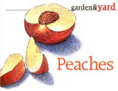
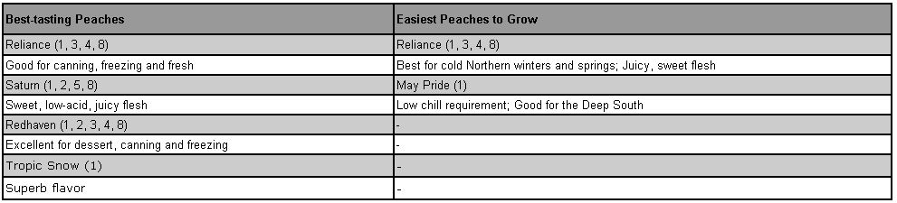

Apples, peaches, pears and plums: Fruit experts name the best-tasting and easiest-to-grow varieties. Follow the link to go to this story's main page.
Sam Powers learned to grow peaches on his three acres in Santa Fe, Texas, from reading NAFEX publications; and asking questions.
His hot climate allows peaches with a low chill requirement to develop a medley of complex flavors. His peaches are SO sumptuous, fans say die fruit Should either have a sin tax applied or be declared illegal.
More than 50 varieties of peaches, nectarines, apricots and low-chill plums grew in Sam's orchard, but many were recently lost to floods. He also grows hot-climate fruits like jujube, fig, persimmon, papaya Pomegranate, quince, papaya, loquat and feijoa (pineapple guava).
However, it's his experience with low chill peaches that has helped other hot-climate fruit growers, most.
Chill hours are when the temperature remains between 32 degrees and 45 degrees. Most nurseries and discount stores sell higher-chill peaches such as 'La Feliciana' (550 chill hours) and 'Elberta' (800 chill hours), but in South Texas, the rapid onset of heat in early spring provides less than 250 chill hours, in every three out of five years.
From Florida breeding programs, he discovered varieties that were suited for places where spring is brief and summer comes suddenly. Varieties Such as 'Tropic Sweet,' 'Mid-Pride' and 'May Pride' require only 150 to 200 chill hours. Their fruit ripens in early to mid-May, before the arrival of the oppressive Texas summer heat.
After he found varieties that set fruit every year, he planted them all to test for flavor. "If we like something, we keep it to eat. The rest is given away: Even the tree goes."
Sam's quest for the best peaches culminated in his choosing 'Tropic Snow,' a white-fleshed freestone (a variety in which the flesh separates easily from the pit) with complex flavor undertones (200 chill hours); 'Tropic Sweet,' a yellow-fleshed freestone with a zing to its sweetness (150 to 175 chill hours): and 'Flordaglo,' another white-fleshed freestone with a flower-like flavor (150 chill hours).
His next adventure will be with 'Peento' or doughnut peach, a white-fleshed clingstone peach with a sunken center.
Go to this story's image gallery to see a chart of the best-tasting and easiest-to-grow peaches.
|
 JOHN BURGOYNE |
 |
|